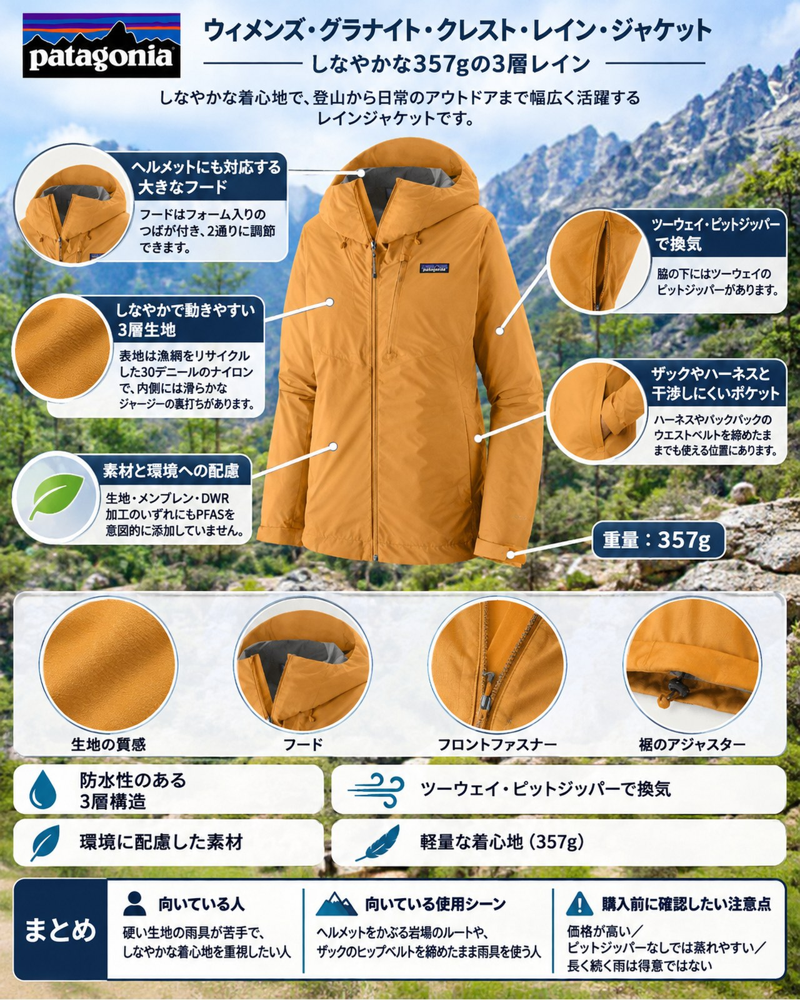

今週は2日と5日に広い範囲で雨の予報が出ており、週末は冬型の気圧配置で冷え込む見込みです。3000m級の稜線では氷点下の日が増え、近郊の低山では紅葉が色づき始めました。晩秋の雨は体を冷やしやすく、ザックを背負って登りながら雨具を着続ける場面も増えます。木曜の雨の前に、雨具を見直しておきましょう。今回紹介するのは、パタゴニアの「ウィメンズ・グラナイト・クレスト・レイン・ジャケット」（製品番号85420）です。保温材の入っていない3層構造のレインジャケットで、しなやかな生地の着心地と、ヘルメットやザックとの使いやすさを重視したい女性に向いています。YAMA FITでは10月に同じパタゴニアの「トレントシェル3L」を紹介しましたが、今回は「価格の差で何が変わるのか」という視点で、2着の違いも見ていきます。
基本スペック
※価格・仕様は2026年11月3日時点のパタゴニア公式オンラインストアの表示です。
| 項目 | 内容 |
|---|---|
| 商品名 | ウィメンズ・グラナイト・クレスト・レイン・ジャケット |
| 製品番号 | 85420 |
| 重量 | 357g |
| 素材 | 3層構造のH2Noパフォーマンス・スタンダード・シェル |
| 表地 | 漁網をリサイクルしたネットプラス・ポストコンシューマーリサイクル・ナイロン100%のリップストップ（3オンス・30デニール） |
| 裏地 | 滑らかなジャージーの裏打ち |
| 撥水 | DWR（耐久性撥水）加工 |
| フィット | レギュラー・フィット |
| サイズ | XXS〜XL |
| カラー | 6色 |
| 価格 | 39,600円（税込） |
しなやかで動きやすい3層生地
表地は漁網をリサイクルした30デニールのナイロンで、内側には滑らかなジャージーの裏打ちがあります。使った人の声では、このジャージーの裏地が肌の湿気を逃がし、快適さと動きやすさを高めているとされています。伸びのある柔らかな生地は、硬くて音の出やすいジャケットが苦手な人に向くという声もあり、作りの質の高さを評価する意見が多く見られます。
ヘルメットにも対応する大きなフード
フードはフォーム入りのつばが付き、2通りに調節できます。使った人の声では、フードはヘルメットの上からかぶれる大きさだとされています。岩場の多いルートや、雨の中でヘルメットをかぶって歩く山行でも使いやすい作りです。
ザックやハーネスと干渉しにくいポケット
ハンドウォーマーポケットは2つで、ハーネスやバックパックのウエストベルトを締めたままでも使える位置にあります。さらにジッパーガレージ付きのチェストポケットがあり、本体を左胸のポケットに収納できます。使った人の声でも、ヒップベルトを締めたままハンドポケットが使えることが確かめられています。
ツーウェイ・ピットジッパーで換気
脇の下にはツーウェイのピットジッパーがあります。使った人の声では、雨よけのフラップ付きで開け閉めしやすく、防水性も損なわないとされています。同じパタゴニアのトレントシェル3Lより、ピットジッパーが長いという紹介もあります。
素材と環境への配慮
生地・メンブレン・DWR加工のいずれにもPFASを意図的に添加していません。ブルーサインの認証を受け、フェアトレード・サーティファイドの工場で作られています。
デメリット・注意点
- 価格が高い：価格の高さを短所に挙げる声が多く、同じパタゴニアのトレントシェル3Lのほうがお得だという意見もあります。
- ピットジッパーなしでは蒸れやすい：使った人の声では、ピットジッパーを開けないとあまり蒸気を逃がさないとされています。ピットジッパーが生地に引っかかりやすく、片手で開けにくいという指摘もあります（一部の意見）。暖かい雨の中を登る日は、休憩のたびに開け閉めする前提で使いましょう。
- 長く続く雨は得意ではない：中程度から強い雨には十分対応するものの、長時間降り続く雨では限界があり、トレントシェル3Lのほうが防水性は高いという声があります。一方で、厳しい条件でも十分に守ってくれたという声もあり、評価が分かれる点です。
- 生地が薄い：30デニールの表地は、同じくらいの重さのジャケットに比べて薄いという声があります。岩や藪で擦れやすいルートでは扱いに気をつけたい点です。
- フードの調節に慣れが必要：フード側面の調節は、いったん締めると緩めにくいという声があります（一部の意見）。
- ポケットに収めにくい：チェストポケットに本体を詰めにくいという声があります（一部の意見）。
向いている人・向いていない人
◎向いている人
- 硬い生地の雨具が苦手で、しなやかな着心地を重視したい人
- ヘルメットをかぶる岩場のルートや、ザックのヒップベルトを締めたまま雨具を使う人
- 素材の環境負荷にも配慮した雨具を選びたい人
△向いていない人
- 価格を抑えたい人（同じパタゴニアならトレントシェル3Lが候補になります）
- 一日中降り続く雨の中を歩く山行が多い人
- 暖かい雨の中を、ベンチレーションを開け閉めせずに速いペースで登りたい人
まとめ
ウィメンズ・グラナイト・クレスト・レイン・ジャケットは、しなやかな3層生地の着心地と、ヘルメット対応のフードやウエストベルトと干渉しにくいポケットが持ち味のレインジャケットです。価格の高さや、ピットジッパーを閉じたときの蒸れやすさは弱点で、防水性と価格のバランスでは同じパタゴニアのトレントシェル3Lに分があるという評価もあります。そのうえで、着心地や動きやすさに価格の差を払う価値を感じる人には、晩秋の雨の山で心強い1着です。木曜の雨の前に、手持ちの雨具と比べてみてください。
この記事で紹介した商品
価格・重量・在庫は各ブランド公式サイトの記載（確認日つき）にもとづきます。商品を押すと、購入先を選べます。
この記事にはアフィリエイト広告が含まれます。リンク先での購入により、当サイトが報酬を受け取る場合があります。山行の前には、最新の気象とルートの状況を必ずご確認ください。